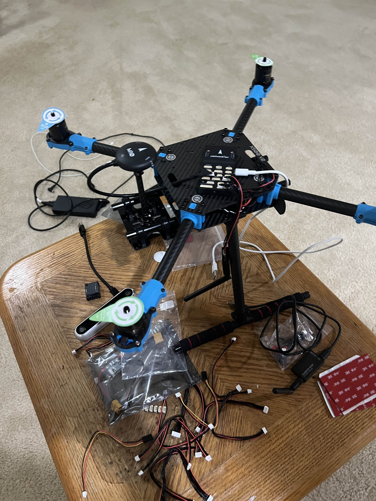

Personal Project • May 2024 – Aug 2024
This project started as a passion for building and flying multirotors and evolved into a complete autonomous system. I integrated a Jetson Nano with an Intel RealSense D455 for real-time depth-based mapping and obstacle avoidance using Python and OpenCV. MAVSDK provided the flight-control interface, and the system was validated in JMavSim and SITL/HITL environments.
